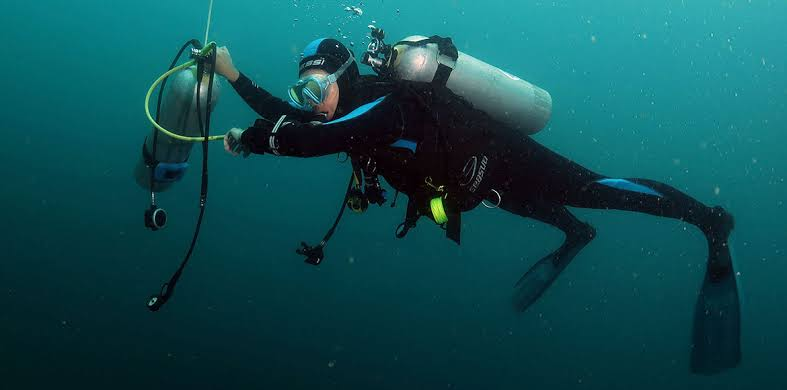

Preservação dos habitats
Não importa onde vivemos, os oceanos são essenciais para nossa vida. Eles fornecem 50% do oxigênio que respiramos e abrigam peixes e outras espécies que fornecem alimento e renda para mais de três bilhões de pessoas. Seus recifes de corais e de ostras, além de florestas de algas abrigam a vida marinha e protegem nossas costas reduzindo a energia das ondas e das marés de tempestade.
Nas margens dos oceanos, as terras úmidas costeiras, tais como manguezais, pântanos de água salgada e prados de sargaços, também protegem nosso litoral. Eles também absorvem o carbono à medida que crescem e o transferem para suas folhas, caules e os solos ricos sustentados por suas raízes. Esse “carbono azul” pode permanecer no solo por milhares de anos. Na realidade, as terras úmidas costeiras armazenam cinco vezes mais carbono por hectare do que as florestas tropicais, ajudando a reduzir a evolução da mudança climática.

Mas o mundo está mudando rapidamente. Estamos vendo o aumento rápido da demanda por alimentos, energia e água para os mais de 7 bilhões de habitantes do nosso planeta, e isso significa mais pressão sobre os oceanos e seus recursos.
Ao mesmo tempo, a mudança do clima está produzindo novas ameaças, tempestades mais intensas e mudanças nos padrões oceânicos.
Com metade da população do mundo vivendo no litoral ou próximo a ele, essas mudanças estão afetando nossas áreas costeiras. Nossos ecossistemas e águas oceânicas precisam ser protegidos para recuperar a saúde dos oceanos.
A TNC apoia a meta global de proteger 30% dos oceanos, terras, rios e lagos do planeta durante a próxima década. A fim de contribuir para esse objetivo, até 2030, a TNC pretende preservar 40 milhões de km2 (mais de 10% da área oceânica do mundo) e, ao mesmo tempo, beneficiar 100 milhões de pessoas em grave risco de emergências relacionadas ao clima.